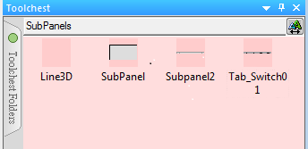

|
|
|
|
|
|
|
|
The following sample template objects are found in the Toolchest's Templates > SubPanels folder. These objects are provided for users to organize information on their screen.

Object Name |
Description |
Line3D |
A grouped object of two lines that can be used to separate information on screen. |
SubPanel |
A static image that can be used as a background to separate and highlight information on screen. |
SubPanel2 |
A title bar image that can be used with the XBTGT2000 or higher series, and the XBTGK5000 series. |
Tab_Switch01 |
A grouped object for opening popup panels. Ungroup the object to open each of the four tabs individually, which then allows you to program each tab as a switch that opens a popup panel. A total of four popup panels can be associated with this grouped object. |